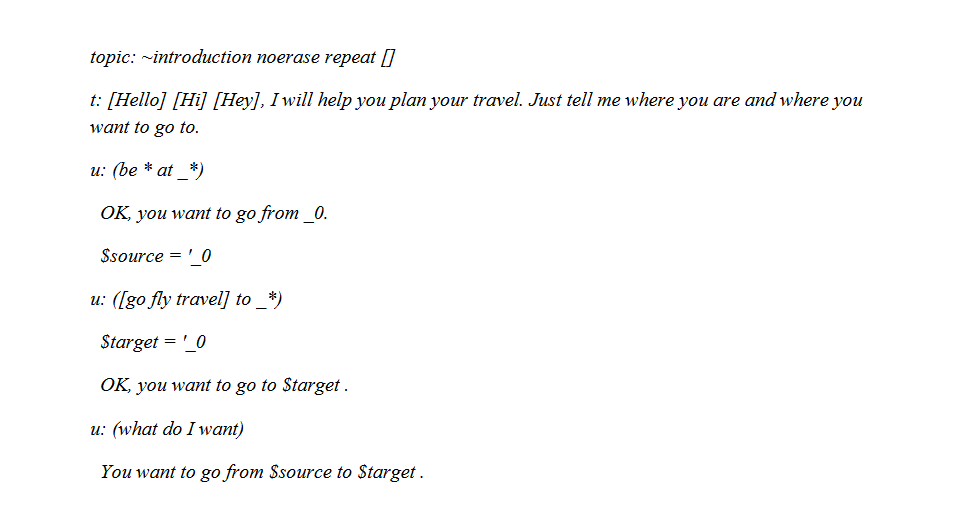

Conversational vs Transactional Chatbots
Thanks Matthias for your answer! Generally speaking, I agree with you pheraps that not all chatbots are “conversational” and in simple cases the chatbot could be implemented directly in your preferred programming language.
This is especially true for command-oriented chatbots or what I name transactional bots: let’s consider by example a bot to just take a taxy. Let’s immagine that there is a taxy service bot with name @GenovaTaxibot
So that bot (optionally realized as a Telegram inline bot) could be just accept a request like:
@GenovaTaxy via Bozzano 2/10
bot answer will be something like:
ciao Giorgio! taxi ALFA66 in 3 minuti.
That’s simple! But please note, by paradox,
this is an example of non-conversational bot!
A taxi service could have just that single (unique) kind of request :) and in this case hard-coding is perfect, simple and fast.
The problem arise with a more complex conversational chatbot: I mean a bot that manage a complex/natural dialog with a user, where, even if inside a singe vertical domain, topics (and number of different dialog flows) are many and the bot have to understand specific/personal requests and possibly the bot have to learn the user usages (memory … “consciousness”) :)
In this next generation bots scenario (Generation II/III ?) I think the hard-coded way could be a programming nightmare, that backing developers in the “goto” spaghetti-software / stones-age. To give a metaphor in web programming, it could be like times whene we made web pages writing HTML code from the backend code… :(
puts "<html><body>This is a spaghetti-nightmare</body></html>"
So, in recent days, I’m become a huge fan of:
dialog flow script meta-languages: languages to describe conversations, producing a source-script code to be evaluated by a run-time dialog engine.
My preferred example is open-source ChatScript by Sue and Bruce Wilcox (my modest intro here). Here below a script example:

Using something like ChatScript (or Rivescript, or Superscript, without going back to awful AIML…) there is learning curve to face, I admit.
But the long-term advantage is to have decoupled the back-end logic from the “front-end” dialog scripting, letting focus “Authoring” the dialog programmers from the back-end software logics (databases, internal services, etc.).
In other terms, dialog scripting is matter of a new “profession” more focused on human-relationship design (?!)/ authoring. And a possible simple dialog scripting metalanguage (as chatScript?) will open conversational application making to not-developers (in the nowaday common sense).
BTW, WIT.ai and API.ai (I used and enjoiyed a bit this last one) are beautiful, but there is a big problem, immo, using a proprietary dialog sytem located on a cloud.
Profit- model a part, the big issue is that, in an application commercial or related to some privacy user data, customers data are are shared withthe platform enabler (that could be WIT.ai, or API.ai, or pandorabots, or any possible other); this is a tremendous issue and that’s the reason why I’m looking for a shared dialog flow script language and an open source dialog engine (my favourite candidate now is chatScript, a system with so many years of experience behind).
Sorry for my digression, I hope not too mutch off-topic
Respect
giorgio